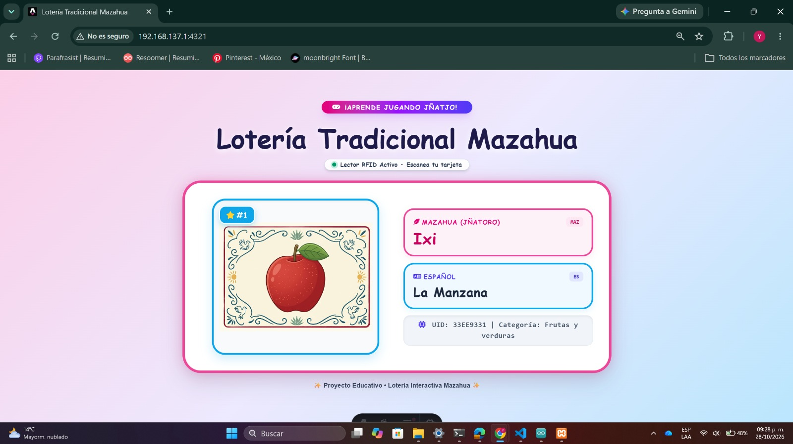

Lotería Interactiva Mazahua
Sistema educativo con ESP32, RFID, MySQL, XAMPP y Astro para el aprendizaje de palabras en mazahua.
Propósito / problema que atiende: Apoyar el aprendizaje de palabras en mazahua mediante una dinámica interactiva que integra componentes físicos y digitales.
Usuarios: Estudiantes que utilicen el recurso educativo.
Herramientas: ESP32, RFID, MySQL, XAMPP y Astro.
Mi participación: Completar con las tareas que realizaste personalmente en hardware, programación, base de datos o interfaz.
Estado y resultados: Completar con el estado real del prototipo y una prueba o resultado comprobable.
Dificultades y mejora: Completar con una dificultad real y una mejora pendiente.
Fecha y contexto: Completar con el periodo y asignatura en que se desarrolló.